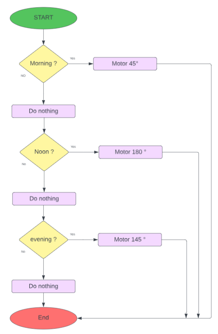

Présentation du projet
Un tracker solaire conçu avec Arduino pour maximiser l'efficacité des panneaux photovoltaïques
Ce projet combine électronique, programmation et conception mécanique pour créer un système qui ajuste automatiquement la position d'un panneau solaire afin qu'il reste orienté vers le soleil tout au long de la journée, maximisant ainsi la production d'énergie.
Le tracker utilise des photorésistances pour détecter la position du soleil et un servomoteur pour ajuster l'angle du panneau. Un Arduino UNO contrôle le système, en comparant les valeurs de luminosité pour déterminer la direction optimale.
Composants utilisés
Les éléments principaux qui constituent ce projet

Photorésistance (LDR)
Capteur qui change de résistance selon la luminosité. Utilisé pour détecter la position du soleil en comparant l'intensité lumineuse sur différents points.

Micro Servomoteur SG90
Moteur de précision qui permet d'orienter le panneau solaire avec un contrôle précis de l'angle. Ce servomoteur peut pivoter de 0 à 180 degrés.

Arduino UNO
Microcontrôleur qui sert de cerveau au système. Il traite les données des capteurs et contrôle le servomoteur en fonction des conditions de luminosité.

Panneau solaire
Convertit l'énergie solaire en électricité. L'efficacité est maximisée lorsque le panneau est perpendiculaire aux rayons du soleil, d'où l'utilité du tracker.
Montage du système
Schémas de montage et prototype réalisé


Principe de fonctionnement
Le système utilise trois photorésistances pour mesurer la luminosité à différents moments de la journée (matin, midi, soir). En fonction des lectures, l'Arduino détermine la position optimale du panneau solaire et ajuste l'angle du servomoteur en conséquence :
- Matin (val_matin > val_midi && val_matin > val_soir) : Position à 120° pour capter les rayons du matin
- Midi (val_midi > val_matin && val_midi > val_soir) : Position à 90° pour capter les rayons zénithaux
- Soir (val_soir > val_matin && val_soir > val_midi) : Position à 45° pour capter les rayons du soir
Code du projet
Le code ci-dessous illustre la logique principale du tracker solaire. Il compare les valeurs des capteurs et ajuste la position du servomoteur en conséquence :
angle = 120;
positionSoleil = "Matin";
} else if (val_midi > val_matin && val_midi > val_soir) {
angle = 90;
positionSoleil = "Midi";
} else if (val_soir > val_matin && val_soir > val_midi) {
angle = 45;
positionSoleil = "Soir";
}
servo.write(angle);
Serial.print("Le moteur est en direction du ");
Serial.print(positionSoleil);
Serial.print(", angle : ");
Serial.println(angle);
Logique du programme
Organigramme montrant la prise de décision pour le positionnement du panneau
Avantages du système
Ce tracker solaire présente plusieurs avantages par rapport à un panneau solaire fixe :
- Efficacité accrue : Augmentation de la production d'énergie jusqu'à 30-40% par rapport à un panneau fixe
- Autonomie : Fonctionnement entièrement automatisé ne nécessitant pas d'intervention humaine
- Adaptabilité : S'ajuste automatiquement aux conditions changeantes de luminosité
- Économique : Réalisé avec des composants abordables et facilement accessibles
- Évolutif : Possibilité d'ajouter des fonctionnalités comme le stockage de données ou la communication sans fil
Conclusion et perspectives
Résultats et améliorations futures
Ce projet de tracker solaire démontre comment des technologies relativement simples peuvent être combinées pour créer un système efficace d'optimisation énergétique. Les tests ont montré une augmentation significative de la production d'énergie par rapport à un panneau fixe.
Améliorations futures
- Système à deux axes : Ajouter un second servomoteur pour suivre le soleil horizontalement et verticalement
- Système de stockage de données : Enregistrer les données de production pour analyse
- Interface de contrôle : Développer une application mobile pour surveiller le système à distance
- Alimentation autonome : Utiliser une partie de l'énergie produite pour alimenter le système lui-même
Projet développé par Baptiste Nuytten | 2023